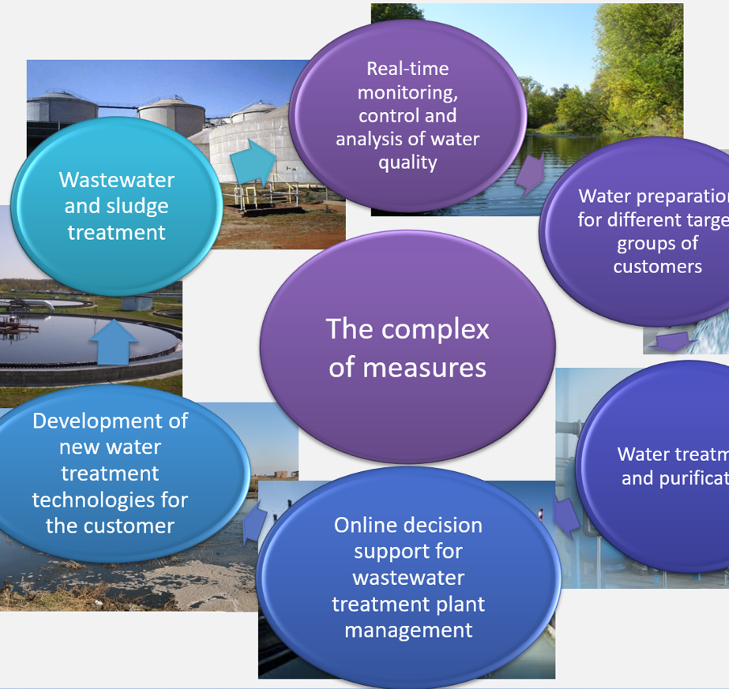

about our center
Who are we ?
The goal of the Center is to form a coordinating center based on an interdisciplinary approach for the development of innovative project proposals aimed at grant activities at the international level, industrial implementation of engineering solutions for the rational use of natural resources, energy-efficient solutions for water treatment and water purification, implementation of closed water resource management systems.
Про наш центр
Хто ми ?
Мета Центру - сформувати координаційний центр на основі міждисциплінарний підхід до розробка інноваційних проектних пропозицій, спрямованих на грантову діяльність на міжнародному рівні, промислове впровадження інженерних рішень щодо раціонального використання природних ресурсів, енергоефективні рішення з водопідготовки та водоочищення, реалізація замкнутої системи водопостачання системи управління ресурсами.

Our center's partner consortium
Партнерський консорціум нашого центру
Europe
-
-
Belarus
- Polessky State University
- EnCata, Itd
-
-
Poland
- University of Life Sciences in Lublin
-
-
Czech
- Czech University of Life Sciences
-
-
Germany
- Technical University of Berlin
-
-
France
- DEEP, Institute National Des Sciences Appliquees Lyon
-
-
Ukraine
- Sumy State University
- National University of Civil Defense of Ukraine
- National Aerospace University “Kharkiv Aviation Institute”
-
-
Slovakia
- Technical University of Košice
-
-
Latvia
- University of Natural Resources and Life Sciences
Asia
-
-
China
- Jiaxing University
-
-
Japan
- Institute of Low Temperature Science, Hokkaido University
Scope of our R&D activities
Сфера нашої науково-дослідницької діяльності
In the chemical industry and thermal power facilities
У хімічній промисловості та на об'єктах теплоенергетики
At municipal water treatment and purification facilities
На міських водоочисних спорудах
In residential complexes and hotels, laboratories, restaurants and water purification lines
У житлових комплексах і готелях, лабораторіях, ресторанах і на лініях очищення води.
In the agricultural business, pharmacology, food industry
В аграрному бізнесі, фармакології, харчовій промисловості
Our projects
Наші проекти
Innovation Solution Developing
Development and adaptation of innovative solutions to the specifics of water consumption. Feasibility study of water treatment and purification technology implementation.
Development and adaptation of innovative solutions to the specifics of water consumption. Feasibility study of water treatment and purification technology implementation.
Розробка інноваційного рішення
Розробка та адаптація інноваційних рішень до специфіки споживання води. Техніко-економічне обґрунтування впровадження технології очищення та очищення води.
Розробка та адаптація інноваційних рішень до специфіки споживання води. Техніко-економічне обґрунтування впровадження технології очищення та очищення води.
Modernization and Implementation
Modernization of existing and creation of new treatment facilities of settlements and enterprises Optimization of technical methods and their environmental and economic feasibility study for the most effective implementation of innovative technologies for wastewater and sludge treatment with the production of useful products
Modernization of existing and creation of new treatment facilities of settlements and enterprises Optimization of technical methods and their environmental and economic feasibility study for the most effective implementation of innovative technologies for wastewater and sludge treatment with the production of useful products
Модернізація і впровадження
Модернізація існуючих та створення нових очисних споруд населених пунктів і підприємства Оптимізація технічних методів і їх еколого-економічне обґрунтування для максимально ефективне впровадження інноваційних технологій очищення стічних вод і опадів з участю виробництво корисних продуктів
Модернізація існуючих та створення нових очисних споруд населених пунктів і підприємства Оптимізація технічних методів і їх еколого-економічне обґрунтування для максимально ефективне впровадження інноваційних технологій очищення стічних вод і опадів з участю виробництво корисних продуктів
Quality system and monitoring
Integrated quality control system for water treatment and purification processes at the local level. Use of a basin system for monitoring the quality of treated wastewater discharged into surface water bodies.
Integrated quality control system for water treatment and purification processes at the local level. Use of a basin system for monitoring the quality of treated wastewater discharged into surface water bodies.
Система якості та моніторинг
Інтегрована система контролю якості процесів очищення і очищення води на місцевому рівні. рівень. Використання басейнової системи контролю якості очищених стічних вод, що скидаються на поверхню водойми.
Інтегрована система контролю якості процесів очищення і очищення води на місцевому рівні. рівень. Використання басейнової системи контролю якості очищених стічних вод, що скидаються на поверхню водойми.
Organization and promotion,
outreach activities
Organization and promotion of national and international scientific and practical conferences and seminars, round tables, lectures, and public discussions of new directions of engineering solutions for rational nature management, energy-efficient solutions for wastewater treatment and water purification, implementation of closed-loop systems for handling secondary water resources with the involvement of leading domestic and foreign specialists
Organization and promotion of national and international scientific and practical conferences and seminars, round tables, lectures, and public discussions of new directions of engineering solutions for rational nature management, energy-efficient solutions for wastewater treatment and water purification, implementation of closed-loop systems for handling secondary water resources with the involvement of leading domestic and foreign specialists
Організація і просування,
інформаційно-пропагандистська діяльність
Організація і просування національних і міжнародних науково-практичних конференцій і семінари, круглі столи, лекції та публічні обговорення нових напрямків інженерних рішень для раціонального природокористування, енергоефективні рішення для очищення стічних вод і водопостачання очищення, впровадження замкнутих систем поводження з вторинними водними ресурсами з залучення провідних вітчизняних і зарубіжних фахівців.
Організація і просування національних і міжнародних науково-практичних конференцій і семінари, круглі столи, лекції та публічні обговорення нових напрямків інженерних рішень для раціонального природокористування, енергоефективні рішення для очищення стічних вод і водопостачання очищення, впровадження замкнутих систем поводження з вторинними водними ресурсами з залучення провідних вітчизняних і зарубіжних фахівців.
News
Новини
On March 26, 2021, Dr. Yelizaveta Chernysh, Associate Professor of the Department of Ecology and Environmental Technologies, Head of International Innovation and Applied Center “Aquatic Artery” (further - the Center “Aquatic Artery”) took part in the plenary session of the I International Correspondence Scientific and Practical Conference “Engineering: Theory and Practice”. The conference was organized by the Faculty of Engineering of the Polessky State University (Belarus) https://eng.polessu.by/node/32, which is a member of the consortium of the Center “Aquatic Artery”. Yelizaveta Chernysh made a report on the activities of the Center “Aquatic Artery” and during the discussion the directions of further cooperation and joining of new partner organizations to the consortium of the Center “Aquatic Artery” were identified, whose representatives were also present at the plenary session of this conference. The conference committee thanked all the participants, in particular our colleague Dr. Yelizaveta Chernysh, for her support in making the conference a success.
26 березня 2021 г. буд-р Єлизавета Черниш, доцент кафедри екології та Екологічні технології, керівник Міжнародного інноваційно-прикладного центру «Водна артерія » (Далі - Центр «Водна артерія») взяв участь в пленарному засіданні I Міжнародної Заочна науково-практична конференція «Техніка: теорія і практика». конференція організований інженерним факультетом Поліського державного університету (Білорусь). https://eng.polessu.by/node/32,який є членом консорціум Центру «Водні артерії». Єлизавета Черниш розповіла про діяльність Центру «Водна артерія» і під час обговорення напрямів подальшої співпраці і приєднання нових партнерських організацій до Виявлено консорціум Центру «Водна артерія», представники якого також були присутні на пленарне засідання цієї конференції. Комітет конференції подякував усім учасникам, зокрема нашого колегу доктора Єлизавету. Черниша за підтримку в проведенні конференції.
Read more Читати далі
International scientific online webinar was held as part of the activities of the International
Innovation and Applied Center "Aquatic Artery" (futher - the Center "Aquatic Artery"), recently
started to work based on the Sumy State University, the Department of Ecology and Environmental
Protection Technologies. The moderator of the webinar, Head of the Center "Aquatic Artery", Dr.
Yelizaveta Chernysh, noted the Center growth priorities, which was formed based on an
interdisciplinary approach and is a focal point for the development of innovative project proposals
focused on grant activities at the international level, industrial implementation of engineering
solutions for sound environmental management, energy-efficient solutions for water treatment and
water
purification, introduction of closed systems for water resource treatment. Also, co-moderator Dr.
Vladimir Shtepa, Member of the Coordinating Council of the Center “Aquatic Artery”, Dean of the
Faculty of Engineering, Polessky State University (Belarus), made a presentation on "Sustainable
water
management: water and wastewater treatment, advances in aquaculture" in the framework of growth
level
of cooperation of the Center "Aquatic Artery".
Also, representatives of partner organizations from Belarus, Germany, Czech Republic, Austria,
Slovakia, France, and Japan took part in the webinar with reports on development of cooperation
directions in scientific sphere within the framework of activity of the Center "Aquatic Artery":
Dr. Balintova Magdalena is a professor at the Institute of Environment Engineering, Technical
University of Košice, Slovakia.
Dr. Rubik Hynek is head of the Biogas research team at the Czech University of Life Sciences
Prague,
Czech Republic.
Dr. Junne Stefan is Professor in the Department of Biotechnology, currently group leader of
“Processes
Analytical Technologies” and “Smart Bioproduction Grids”, Technical University of Berlin, Germany
Dr. Fukui Manabu is Professor, Director of the Institute of the Low Temperature Science, Hokkaido
University, Japan.
Dr. Gauthier Mathieu is Associate Professor, Laboratory of Wastes Water Environment Pollutions
(DEEP),
National Institute of Applied Sciences, Lyon, France.
Dr. Bochmann Günther is Principal Investigator of Anaerobic Technology, University of Natural
Resources and Life Sciences, Austria.
Professor Konstantin Kovler, Head, Building Materials, Performance and Technology Department,
National
Building Research Institute, Technion – Israel Institute of Technology, joined the meeting to
discuss
directions for international cooperation.
The reports were also presented by employees of domestic partner organizations, in particular Dr.
Roman Ponomarenko, Deputy Head of the Department of Fire and Rescue Training, the National
University
of Civil Defense of Ukraine, Sergey Lobov, PhD, Associate Professor, the National Aerospace
University
"Kharkov Aviation Institute", and Yevhenii Shapovalov, PhD, the National Center "Minor Academy of
Sciences".
Strategic priorities for the development of the Center "Aquatic Artery" were identified to organize
work on joint grant proposals at the international level. We are open for cooperation!
A recording of the webinar is available at the link: \
https://youtu.be/eXKYVuJzSnk
Міжнародний науковий онлайн-вебінар пройшов в рамках заходів Міжнародного
Інноваційно-прикладної центр «Водна артерія» (далі - Центр «Водна артерія»), недавно
почав працювати на базі Сумського державного університету, кафедра екології та екології.
Технології захисту. Модератор вебінару, керівник центру «Водна артерія» д-р.
Єлизавета Черниш відзначила пріоритети зростання Центру, сформовані на основі
міждисциплінарний підхід і є центром розробки інноваційних проектних пропозицій
орієнтована на грантову діяльність на міжнародному рівні, промислове впровадження інжинірингу
рішення для раціонального управління навколишнім середовищем, енергоефективні рішення для очищення
води
і
води
очищення, впровадження закритих систем очищення водних ресурсів. Також сокодератор Dr.
Володимир Штепа, член координаційної ради центру «Водна артерія», декан
Інженерний факультет Поліського державного університету (Білорусь) виступив з презентацією на
тему «Сталий водопостачання.
управління: очищення води і стічних вод, досягнення в аквакультурі »в рамках рівня зростання
співпраці Центру «Водна артерія».
Одночасно між представниками партнерських організацій з Білорусі, Німеччини, Чехії, Австрії,
Словаччина, Франція і Японія взяли участь у вебінарі з доповідями про розвиток співробітництва.
напрямки в науковій сфері в рамках діяльності Центру «Водна артерія»:
Д-р Балінтова Магдалена - професор Інституту екологічної інженерії, технічний
Кошицький університет, Словаччина.
Доктор Рубік Хінек - керівник дослідницької групи по біогазу Чеського університету
природничих наук у Празі,
Республіка Чехія.
Д-р Юнне Стефан - професор кафедри біотехнології, в даний час керівник групи «Процеси
Аналітичні технології »та« Інтелектуальні системи біопродукції », Берлінський технічний
університет, Німеччина.
Доктор Фукуї Манабу - професор, директор Інституту низькотемпературних наук, Хоккайдо.
Університет, Японія.
Д-р Готьє Матьє, доцент лабораторії забруднення навколишнього середовища стічними водами (DEEP),
Національний інститут прикладних наук, Ліон, Франція.
Д-р Бохманн Гюнтер - головний дослідник анаеробних технологій, Університет природознавства.
Ресурси і науки про життя, Австрія.
Професор Костянтин Ковлер, завідувач кафедри будівельних матеріалів, продуктивності і
технологій, Національний
Інститут будівельних досліджень, Техніон - Ізраїльський технологічний інститут, приєднався до
зустрічі, щоб обговорити
напрямки міжнародного співробітництва.
Звіти також представили співробітники вітчизняних партнерських організацій, зокрема Dr.
Роман Пономаренко, заступник завідувача кафедри пожежно-рятувальної підготовки Національного
університету
цивільної оборони України, Сергій Лобов, кандидат медичних наук, доцент, Національний
аерокосмічний університет
«Харківський авіаційний інститут» та Євген Шаповалов, кандидат медичних наук, Національний
центр
«Мала академія р
Наук ».
Визначено стратегічні пріоритети розвитку Центру «Водні артерії» для організації
робота над спільними грантовими пропозиціями на міжнародному рівні. Ми відкриті для
співпраці!
Запис вебінару доступна за посиланням:
https://youtu.be/eXKYVuJzSnk
The online meeting with research staff of University of Life Sciences in Lublin (Poland) and
Polessky
State University (Belarus) within activity of the International Innovation-Applied Center “Aquatic
Artery” (further - the Center “Aquatic Artery”) based on Sumy State University, Department of
Ecology
and Nature Protection Technologies was successfully held. At the beginning of the meeting,
moderators:
Head of the Center “Aquatic Artery”, Dr. Yelizaveta Chernysh, Associate Professor of the Department
of
Ecology and Environmental Protection Technologies, which noted areas of development within the
framework of the Center based on interdisciplinary approach, and also made a presentation of
research
work on “Wastewater recycling with production of biofuel and other bio-based products”; Dr.
Vladimir
Shtepa, Member of the Coordinating Council of the Center “Aquatic Artery”, Dean of the Engineering
Faculty of the Polessky State University (Belarus), who gave a detailed presentation on innovative
technological solutions in water treatment.
Under the directions of possible cooperation within the framework of the activities of the Center
“Aquatic Artery” spoke Professor Krzysztof Jóźwiakowski, Head of the Department of Environmental
Engineering and Geodesy and Patricia Pochwatka, researcher and lecturer of the Department of
Environmental Engineering and Geodesy from University of Life Sciences in Lublin.
Yelizaveta Chernysh noted the directions for further development of cooperation within the
framework
of the Center “Aquatic Artery” activities, in particular:
• Development and adaptation of innovative solutions to the specifics of water consumption;
• Feasibility study of water treatment and purification technology implementation;
• Modernization of existing and creation of new treatment facilities in settlements and
enterprises;
• Optimization of technical methods and their environmental and economic feasibility study for the
most effective implementation of innovative technologies for wastewater and sludge treatment with
the
production of useful products;
• Integrated quality control system for water treatment and purification processes at the local
level;
• Use of a basin system for monitoring the quality of treated wastewater discharged into surface
water
bodies;
• Participation and holding of round tables, webinars, congresses in sphere of protection of
aquatic
ecosystems and development of innovations in water quality management on involvement of local
authorities and public, as well as representatives of scientific and educational institutions at
international level.
We are open for cooperation and development!
A recording of the webinar is available at the link:
https://youtu.be/eXKYVuJzSnk
Онлайн-зустріч з науковцями Університету природних наук в Любліні (Польща) та
Поліському
Державний університет (Білорусь) в рамках діяльності Міжнародного
інноваційно-прикладного
центру «Акватик».
Артерія »(далі - Центр« Водна артерія ») на базі Сумського державного університету, кафедра
екології.
і Технології охорони природи. На початку зустрічі модератори:
Завідуюча Центром «Водна артерія», доктор Єлизавета Черниш, доцент кафедри
Екологія і технології захисту навколишнього середовища, що відзначили напрямки розвитку в
в рамках Центру, заснованого на міждисциплінарному підході, а також проведена презентація
досліджень
робота по темі «Рециркуляція стічних вод з виробництвом біопалива та інших біопродуктів»; доктор
владимир
Штепа, член координаційної ради центру «Водна артерія», декан інженерного факультету.
Факультету Поліського державного університету (Білорусь), який докладно розповів про
інноваційної
технологічні рішення в водопідготовки.
За напрямками можливої співпраці в рамках діяльності Центру
«Водна артерія» говорив професор Кшиштоф Йужвяковскій, завідувач кафедри навколишнього середовища.
Інженерно-геодезія і Патриція Почватка, науковий співробітник і викладач кафедри
Екологічна інженерія та геодезія від Університету природних наук в Любліні.
Єлизавета Черниш відзначила напрямки подальшого розвитку співпраці в рамках
діяльності Центру «Водна артерія», зокрема:
• Розробка і адаптація інноваційних рішень до специфіки водоспоживання;
• Техніко-економічне обґрунтування впровадження технологій водопідготовки та очищення;
• Розробка проектів модернізації існуючих і створення нових очисних споруд в населених пунктах і на
підприємствах;
• Оптимізація технічних методів і їх еколого-економічне обґрунтування для
максимально ефективне впровадження інноваційних технологій очищення стічних вод і опадів з
виробництво корисних продуктів;
• Інтегрована система контролю якості водопідготовки і очищення води на місцевому рівні;
• Використання базової системи для моніторингу якості очищених стічних вод, що скидаються в
поверхневі води.
• Участь і проведення круглих столів, вебінарів, конгресів в сфері охорони водних ресурсів.
екосистем і розвиток інновацій в управлінні якістю води з залученням місцевих
органів влади і громадськості, а також представників наукових і освітніх установ на
міжнародний рівень.
Ми відкриті для співпраці і розвитку!
Запис вебінару доступна за посиланням:
https://youtu.be/eXKYVuJzSnk